Barn · Ringmer
Gote Barn
An Elizabethan barn with a high vaulted ceiling on a working dairy farm, about five minutes from Lewes, open for weddings from late April to early…
- Up to 200 guests
- Own caterer allowed
13 venues · checked 11 October 2026
East Sussex and Brighton give you the widest spread of settings in the county: a seafront hotel, a farm on top of the Downs, a racecourse, a moated priory and a castle near the coast.


Barn · Ringmer
An Elizabethan barn with a high vaulted ceiling on a working dairy farm, about five minutes from Lewes, open for weddings from late April to early…

Country house · Buxted
An 18th-century Palladian mansion near Uckfield, now a hotel, with ceremonies for up to 120, evening parties for 200 and 43 bedrooms for guests.

Weddings from 2028
Vineyard · Alfriston
A wine estate near Alfriston that is rebuilding its wedding spaces.

Historic · Upper Dicker
A historic priory run by Sussex Past, with an Elizabethan Great Barn for up to 130, a Tudor house, and ceremonies indoors or in the orchard and…

Historic · Hailsham
A castle near Hailsham with ceremony rooms for 30 to 180, outdoor ceremonies in the Cloisters, a bridal suite in the castle and rooms for guests at…

Hotel · Brighton
A seafront hotel in Brighton where weddings take over the Marine Room, with a wedding breakfast, prosecco and wine included and a room for the couple…

Something different · Brighton
A family-run working farm on top of the South Downs, five miles from Brighton, with marquee weddings, sea views, a ceremony licence and a farmhouse…

Something different · Plumpton
A racecourse near Lewes with outdoor ceremonies in the Paddock, a marquee and rooms for the reception, exclusively yours for the day.

Historic · Wadhurst
A castle in the Sussex countryside with ceremonies in the Drawing Room, the Winter Garden or a pavilion in the walled garden, and views from the…

Country house · Firle
A historic country house in its own parkland near Lewes, made over exclusively to your party, with civil ceremonies inside or out and menus from its…

Hotel · Lewes
A 16th-century town house hotel in the middle of Lewes, licensed for ceremonies in its Panelled and Terrace rooms, with 36 bedrooms a short walk from…

Hotel · Little Horsted
A Victorian Gothic country house hotel near Uckfield with landscaped gardens, a library, a garden room and a Victorian-style summerhouse.
Hotel · Uckfield
A golf and spa resort near Uckfield with ceremonies in a garden birdcage on the south lawns and receptions for up to 330 across two suites.
Capacity, licence, catering and rooms for every venue on this page, side by side.
| Venue | Guests | Ceremony licence | Food and drink | Rooms |
|---|---|---|---|---|
| Gote BarnRingmer | 150 seated, 200 standing | Not stated | Outside caterers, or a full package through Circa Events | Not stated |
| Buxted ParkBuxted | 120 for the ceremony and meal, 200 in the evening | Not stated | In-house, with bespoke wedding menus | 43 bedrooms, with group rates for wedding guests |
| Rathfinny Wine EstateAlfriston | Up to 120 guests | Not stated | Not stated | Flint Barns B&B and self-catering accommodation, with new huts and rooms planned |
| Michelham PrioryUpper Dicker | 130 seated and 175 standing in the Great Barn; 60 in the Priory Chamber | Yes | Approved caterers; your own drinks during the day with no corkage, then the in-house bar | None on site; the venue suggests nearby hotels |
| Herstmonceux CastleHailsham | Up to 180 in the Castle Ballroom | Not stated | Ask the venue | A bridal suite in the castle, and rooms at Bader Hall nearby with 10% off for wedding guests |
| Harbour Hotel BrightonBrighton | Wedding packages are built around 40 guests, with more added | Not stated | In-house | Hotel rooms, with a wedding-night room for the couple included |
| Devil's Dyke FarmBrighton | Not stated on their website | Yes | Not stated | A four-bedroom farmhouse and a log cabin on site |
| Plumpton RacecoursePlumpton | Not stated on their website | Yes | Inclusive packages cover the wedding breakfast | Not stated |
| Wadhurst CastleWadhurst | Wedding breakfast for 100 in the castle or 150 with a marquee; drinks for 120 in the castle | Not stated | Not stated | Not stated |
| Firle PlaceFirle | Not stated on the weddings page | Yes | In-house chefs: a seated banquet, sharing platters, or canapés and cocktails | Not stated |
| Pelham HouseLewes | Not stated on the weddings page | Yes | Seasonal menus from the head chef, using local produce where possible | 36 individually styled bedrooms, including a bridal suite with a free-standing bath |
| Horsted PlaceLittle Horsted | Not stated on the weddings page | Not stated | Not stated | Double rooms and suites, from Horsted and Victorian suites to the Royal and Master suites |
| East Sussex NationalUckfield | Up to 330 seated across the National Suite and Lynx Roundall | Yes | Hotel wedding packages, or a self-catering package for multicultural dining | Hotel rooms on site; the number is not stated on the weddings page |
Michelham Priory, Devil's Dyke Farm, Plumpton Racecourse, Firle Place, Pelham House and East Sussex National say they are licensed for civil ceremonies. The others don't state a licence on their websites, so ask before you book.
Buxted Park, Rathfinny Wine Estate, Herstmonceux Castle, Harbour Hotel Brighton, Devil's Dyke Farm, Pelham House, Horsted Place and East Sussex National have somewhere for you or your guests to stay.
Gote Barn and East Sussex National let you bring your own caterer or suppliers. The rest use in-house or approved caterers, or don't say.
We checked every venue's own website on 11 October 2026, and each venue page links to the source we used.